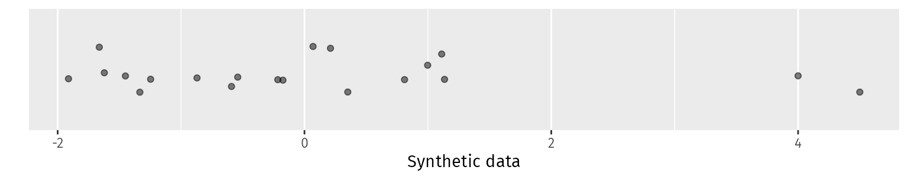

Code
n01b <- tibble(y = c(n01$v2[1:18], 4, 4.5))
n01b |>
ggplot(aes(x = y, y = 1)) +
geom_jitter(width = 0, alpha = 0.5) +
scale_y_discrete() +
labs(y = "", x = "Synthetic data")

The early history of anomaly detection method involved statistical tests and assumptions about the distribution of the data. There are much better methods available these days, but these old methods are still widely used. So they are included here for historical interest, and to point out their flaws to those still using them. There is nothing in later chapters that assumes knowledge of this chapter, so if you want to skip on to more useful methods, head to Chapter 5.
We will only consider univariate methods in this chapter. There have been multivariate parametric methods for anomaly detection, but they are much less widely used and are also best avoided.
We will test the methods using six examples: two involving real data, and four involving simulated data.
cricket_batting data set. As discussed in Section 1.5, these appear to contain one genuine anomaly, the batter Don Bradman.n01 data, along with the values 4.0 and 4.5. The latter two are anomalies as they are unlikely to arise from the N(0,1) distribution. We save this data set as n01b. The plot below shows the data for this example.n01b <- tibble(y = c(n01$v2[1:18], 4, 4.5))
n01b |>
ggplot(aes(x = y, y = 1)) +
geom_jitter(width = 0, alpha = 0.5) +
scale_y_discrete() +
labs(y = "", x = "Synthetic data")The other three simulated examples will use 1000 observations from each of the following distributions:
n01 data set);The density functions for these three distributions are shown in Figure 4.2.
c(t3 = dist_student_t(3), X4 = dist_chisq(4), N01 = dist_normal()) |>
gg_density() +
labs(y = "Probability density") +
scale_color_discrete(
breaks = c("t3", "X4", "N01"),
labels = c(
latex2exp::TeX("$t_{~3}$"),
latex2exp::TeX("$\\chi^{~2}_{~~4}$"),
"N(0,1)"
)
) +
theme(legend.text = element_text(hjust = 0)) +
coord_cartesian(xlim = c(-5, 10))Data for the last two examples are generated below.
set.seed(1)
t3 <- tibble(y = rt(1000, df = 3))
chisq4 <- tibble(y = rchisq(1000, df = 4))All of the methods considered in this chapter assume the underlying data follow a Normal distribution. In our examples, only #4 is from a Normal distribution, so the methods should work well in that case, but perhaps not in the other cases.
Good anomaly detection methods should pick up one anomaly in the cricket batting example, at least two anomalies in the Old Faithful example, and the two anomalies in the n01b example. They should identify no anomalies in the remaining examples.
Many parametric methods are based on z-scores (Section 3.9) and assume that the data come from a Normal distribution. Recall that if our data are given by y_1,\dots,y_n, then their z scores are given by z_i = (y_i - \bar{y})/s_y where \bar{y} is the mean and s_y is the standard deviation of the observations.
Some books recommend that observations be identified as anomalies when the absolute value of the corresponding z is above some threshold (usually 3). This is a bad idea for several reasons.
Let’s see what happens when we apply this test to the six examples.
cricket_batting |>
filter(Innings > 20) |>
mutate(z = (Average - mean(Average)) / sd(Average)) |>
filter(abs(z) > 3) |>
select(Player, Average, z)#> # A tibble: 1 × 3
#> Player Average z
#> <chr> <dbl> <dbl>
#> 1 DG Bradman 99.9 5.55oldfaithful |>
mutate(z = (duration - mean(duration)) / sd(duration)) |>
filter(abs(z) > 3)#> # A tibble: 1 × 4
#> time duration waiting z
#> <dttm> <dbl> <dbl> <dbl>
#> 1 2015-12-07 00:09:00 7200 3420 45.7n01b |>
mutate(z = (y - mean(y)) / sd(y)) |>
filter(abs(z) > 3)#> # A tibble: 0 × 2
#> # ℹ 2 variables: y <dbl>, z <dbl>n01 |>
select(v1) |>
mutate(z = (v1 - mean(v1)) / sd(v1)) |>
filter(abs(z) > 3)#> # A tibble: 1 × 2
#> v1 z
#> <dbl> <dbl>
#> 1 3.81 3.69t3 |>
mutate(z = (y - mean(y)) / sd(y)) |>
filter(abs(z) > 3)#> # A tibble: 18 × 2
#> y z
#> <dbl> <dbl>
#> 1 -7.40 -4.78
#> 2 5.53 3.49
#> 3 10.5 6.66
#> 4 -5.82 -3.77
#> 5 -5.23 -3.39
#> 6 6.20 3.92
#> 7 4.88 3.08
#> 8 -4.77 -3.10
#> 9 5.99 3.79
#> 10 -5.72 -3.70
#> 11 -4.70 -3.05
#> 12 -5.37 -3.48
#> 13 -6.61 -4.27
#> 14 5.02 3.17
#> 15 -11.4 -7.33
#> 16 7.65 4.85
#> 17 5.32 3.36
#> 18 6.38 4.04chisq4 |>
mutate(z = (y - mean(y)) / sd(y)) |>
filter(abs(z) > 3)#> # A tibble: 15 × 2
#> y z
#> <dbl> <dbl>
#> 1 14.4 3.74
#> 2 14.1 3.63
#> 3 13.0 3.23
#> 4 13.5 3.42
#> 5 13.7 3.48
#> 6 13.3 3.35
#> 7 12.5 3.04
#> 8 17.0 4.68
#> 9 13.7 3.48
#> 10 12.9 3.20
#> 11 14.0 3.60
#> 12 15.2 4.04
#> 13 14.1 3.62
#> 14 13.9 3.55
#> 15 12.7 3.12Even if the data did come from a Normal distribution, the probability of an observation being more than 3 standard deviations from the mean is 0.0027, so we would expect to see 1 in every 1/ 0.0027 = 370 regular observations being identified as an anomaly using this approach.
In fact, we can be more accurate than this. If our n observations come from a Normal distribution, then the z-scores follow (approximately) a \text{t}_{n-1} distribution. (The approximation arises because we replace the mean and standard deviations by their sample estimate.) When we identify anomalies as those points with |z|>c, then the probability of finding at least one spurious anomaly is the probability of the maximum being above c or the minimum being below -c. Since the distribution is symmetric, these probabilities are the same. Let M_n be the maximum of n z-scores computed from the data; then P(M_n \le c) = (F_{t}(c; n-1))^n where F_{t}(y; n-1) is the cumulative distribution function of a t distribution with n-1 degrees of freedom. So the probability of at least one spurious anomaly is 1 - (F_{t}(c; n-1))^{2n}. \tag{4.1} This probability is accurate for large n, but not for small sample sizes. So, instead, we will use simulation to compute the probabilities; these are plotted in Figure 4.3 for several values of c and n.
Let’s also compute the probability of spurious anomalies for different data distributions — the \text{t}_3 and \chi^2_4 distributions shown in Figure 4.2.
Notice how the departures from normality, either via skewness (for the \chi^2 distribution) or with heavier tails (for the t distribution), lead to much greater probabilities for spurious anomalies. Any tests for anomaly detection that assume an underlying data distribution will be sensitive to the shape of that distribution.
Even if we were prepared to believe that the data come from a Normal distribution, we need to adjust the threshold to allow for the sample size. This is the idea behind the next methods we will consider.
Benjamin Peirce was a Harvard mathematician in the mid 1800s who worked with astronomical data which were prone to anomalous observations. He proposed the first known test based on what are now called z-scores (Peirce 1852). His criterion was that any observations with |z| > c should be “rejected”, where c is a complicated function depending on the sample size n and the number of suspected anomalies.
Figure 4.5 shows the value of c as a function of sample size, when there is only one suspected anomaly.
The threshold increases with sample size n to allow for the increasing likelihood of observations falling in the extreme tails of the distribution.
The peirce_anomalies() function returns a logical vector indicating which observations are anomalous under this criterion. Let’s apply it to the six examples.
cricket_batting |> filter(peirce_anomalies(Average))#> # A tibble: 0 × 15
#> # ℹ 15 variables: Player <chr>, Country <chr>, Start <int>, End <int>,
#> # Matches <int>, Innings <int>, NotOuts <int>, Runs <int>, HighScore <dbl>,
#> # HighScoreNotOut <lgl>, Average <dbl>, Hundreds <int>, Fifties <int>,
#> # Ducks <int>, Gender <chr>oldfaithful |> filter(peirce_anomalies(duration))#> # A tibble: 1 × 3
#> time duration waiting
#> <dttm> <dbl> <dbl>
#> 1 2015-12-07 00:09:00 7200 3420n01 |>
select(v1) |>
filter(peirce_anomalies(v1))#> # A tibble: 1 × 1
#> v1
#> <dbl>
#> 1 3.81n01b |> filter(peirce_anomalies(y))#> # A tibble: 2 × 1
#> y
#> <dbl>
#> 1 4
#> 2 4.5t3 |> filter(peirce_anomalies(y))#> # A tibble: 10 × 1
#> y
#> <dbl>
#> 1 -7.40
#> 2 10.5
#> 3 -5.82
#> 4 6.20
#> 5 5.99
#> 6 -5.72
#> 7 -6.61
#> 8 -11.4
#> 9 7.65
#> 10 6.38chisq4 |> filter(peirce_anomalies(y))#> # A tibble: 6 × 1
#> y
#> <dbl>
#> 1 14.4
#> 2 14.1
#> 3 17.0
#> 4 14.0
#> 5 15.2
#> 6 14.1Peirce’s proposal was largely superseded by an alternative proposed by the astrophysicist William Chauvenet, which was much simpler to describe. He suggested (Chauvenet 1863) replacing the threshold c by the 1-0.25/n quantile from the standard Normal distribution. This threshold is also shown in Figure 4.5. A consequence of this choice is that Chauvenet’s criterion will reject, on average, half an observation of genuine data from a Normal distribution regardless of the value of n. However, for non-normal data, there is no such guarantee that genuine observations will not be detected as anomalies. Despite its flaws, the method is still widely used in some disciplines, especially engineering.
The chauvenet_anomalies() function can be used to implement this test. For our six examples, it gives similar results to those above for peirce_anomalies() (with two additional spurious anomalies for the t_2 example, and one additional spurious anomaly for the \chi^2_4 example.)
By the 20th century, the concept of hypothesis testing had been developed, and the t-distribution had been discovered, and both were applied to the identification of anomalies using z-scores. Many tests were developed under different assumptions about the underlying distribution and what was assumed to be known (Hawkins 1980). We will mention just two of them here, as they are the most widely used.
Egon Pearson and Chandra Sekar proposed (Pearson and Sekar 1936) that an observation be considered an anomaly if |z_i|> c_\alpha, where the critical value is given by c_\alpha = t_{\alpha/n, n-2} \sqrt{\frac{n-1}{n-2+t^2_{\alpha/n, n-2}}} and t_{p, k} is the 1-p quantile of the t distribution with k degrees of freedom. Later, this was extended by Frank Grubbs (Grubbs 1950) who proposed using c_\alpha = \frac{(n-1)t_{\alpha/2n, n-2}}{\sqrt{n(n-2 + t^2_{\alpha/2n, n-2})}}.
Figure 4.6 shows the critical values at \alpha=0.05 for these tests, along with the corresponding value from Chauvenet (1863) for comparison.
From these, we can compute the probability of a spurious anomaly in a Normal distribution, using Equation 4.1. This probability should be equal to \alpha=0.05.
Figure 4.7 shows that only Grubbs’ test gives reasonable results, with the others finding too many anomalies except in small samples.
However, when we allow for different data distributions, Grubbs’ test also gives poor results, showing it is sensitive to the assumed data distribution.
We can apply the test using the grubbs_anomalies() function to our six examples.
cricket_batting |>
filter(Innings > 20) |>
filter(grubbs_anomalies(Average)) |>
select(Player, Country, Average)#> # A tibble: 1 × 3
#> Player Country Average
#> <chr> <chr> <dbl>
#> 1 DG Bradman Australia 99.9oldfaithful |>
filter(grubbs_anomalies(duration))#> # A tibble: 1 × 3
#> time duration waiting
#> <dttm> <dbl> <dbl>
#> 1 2015-12-07 00:09:00 7200 3420n01b |>
filter(grubbs_anomalies(y))#> # A tibble: 0 × 1
#> # ℹ 1 variable: y <dbl>n01 |>
filter(grubbs_anomalies(v1))#> # A tibble: 0 × 10
#> # ℹ 10 variables: v1 <dbl>, v2 <dbl>, v3 <dbl>, v4 <dbl>, v5 <dbl>, v6 <dbl>,
#> # v7 <dbl>, v8 <dbl>, v9 <dbl>, v10 <dbl>t3 |>
filter(grubbs_anomalies(y))#> # A tibble: 6 × 1
#> y
#> <dbl>
#> 1 -7.40
#> 2 10.5
#> 3 -6.61
#> 4 -11.4
#> 5 7.65
#> 6 6.38chisq4 |>
filter(grubbs_anomalies(y))#> # A tibble: 1 × 1
#> y
#> <dbl>
#> 1 17.0The clear failure is with the \text{t}_3 distribution which has no real anomalies. A spurious anomaly is also detected in the \chi^2_4 example, and real anomalies are missed in the Old Faithful data and in n01b.
If y_{(1)},\dots,y_{(n)} denote the ordered values of our sample, then Dixon’s Q statistic (Dixon 1950) is given by Q = \frac{y_{(n)} - y_{(n-1)}}{y_{(n)} - y_{(1)}}, the ratio of the difference between the two largest values to the range of the data. If the largest value is the only anomaly, then Q will take a larger value than expected.
The corresponding test for the minimum to be an anomaly uses y_{(2)}-y_{(1)} in the numerator instead, the difference between the second smallest and minimum observations. Both minimum and maximum values can be tested simultaneously using the two-sided test, where the numerator is the maximum of y_{(n)} - y_{(n-1)} and y_{(2)}-y_{(1)}.
The test is clearly flawed for several reasons. First, if the two largest values are both anomalies of similar size, then Q will be small and these anomalies will be missed. Also, if both maximum and minimum values are anomalies, the denominator will be larger than expected, thereby reducing the size of Q.
As with the other tests considered here, the test assumes that the underlying data distribution is normal, and anomalies are identified which appear inconsistent with that assumption.
Simulation can be used to compute the critical values for this test, assuming that the data come from a Normal distribution. We can also use simulation to compute the probability of false positives, giving the results shown in Figure 4.9. As with the other tests we have considered, Dixon’s test is sensitive to the assumed data distribution making it largely useless for real data analysis.
We can apply the test using the dixon_anomalies() function, which does a two-sided test of both minimum and maximum observations.
cricket_batting |>
filter(Innings > 20) |>
filter(dixon_anomalies(Average)) |>
select(Player, Country, Average)#> # A tibble: 1 × 3
#> Player Country Average
#> <chr> <chr> <dbl>
#> 1 DG Bradman Australia 99.9oldfaithful |>
filter(dixon_anomalies(duration))#> # A tibble: 1 × 3
#> time duration waiting
#> <dttm> <dbl> <dbl>
#> 1 2015-12-07 00:09:00 7200 3420n01b |>
filter(dixon_anomalies(y))#> # A tibble: 0 × 1
#> # ℹ 1 variable: y <dbl>n01 |>
filter(dixon_anomalies(v1))#> # A tibble: 0 × 10
#> # ℹ 10 variables: v1 <dbl>, v2 <dbl>, v3 <dbl>, v4 <dbl>, v5 <dbl>, v6 <dbl>,
#> # v7 <dbl>, v8 <dbl>, v9 <dbl>, v10 <dbl>t3 |>
filter(dixon_anomalies(y))#> # A tibble: 1 × 1
#> y
#> <dbl>
#> 1 -11.4chisq4 |>
filter(dixon_anomalies(y))#> # A tibble: 0 × 1
#> # ℹ 1 variable: y <dbl>For these examples, the test has worked relatively well apart from n01b, where it is failed to identify either anomaly, and t3 where it has identified a spurious anomaly.
We can summarise the results of the various tests used here in the following table.
| Example | N observations | Expected anomalies | Zscore | Peirce | Chauvenet | Grubbs | Dixon |
|---|---|---|---|---|---|---|---|
| 1. Cricket batting | 3754 | 1 | 1 | 0 | 0 | 0 | 1 |
| 2. Old Faithful duration | 2261 | 2 | 1 | 1 | 1 | 1 | 1 |
| 3. N(0,1) + 2 outliers | 20 | 2 | 0 | 2 | 2 | 0 | 0 |
| 4. N(0,1) | 1000 | 0 | 1 | 1 | 1 | 0 | 0 |
| 5. \text{t}_3 | 1000 | 0 | 18 | 10 | 12 | 6 | 1 |
| 6. \chi^2_4 | 1000 | 0 | 15 | 6 | 7 | 1 | 0 |
None of the tests found the two clear anomalies in the Old Faithful data, and most failed to find either of the artificial anomalies in n01b. All tests found at least one spurious anomaly in the large simulated data sets with no real anomalies.
As noted at the start of this chapter, anomaly detection methods based on assumed data distributions are unreliable. Until about 1975, they were the only viable methods given the lack of computing facilities available, because they could be implemented using tables and hand calculations. However, there is really no justifiable reason for continuing to use such methods.
They are particularly sensitive to the assumed data distribution, and the probability of detecting spurious anomalies is usually much higher in reality than under the ideal conditions in which the tests were conceived.
These tests are sometimes applied iteratively, where observations are removed from the data if determined to be anomalies, and the test re-applied to the remaining data. This process continues until no more anomalies are found. However, this procedure will clearly change the size of the test due to the problem of multiple comparisons.
Next, we will turn out attention to methods that arose in the latter part of the 20th century which were based on quantiles and data depth rather than on any underlying parametric data distribution.